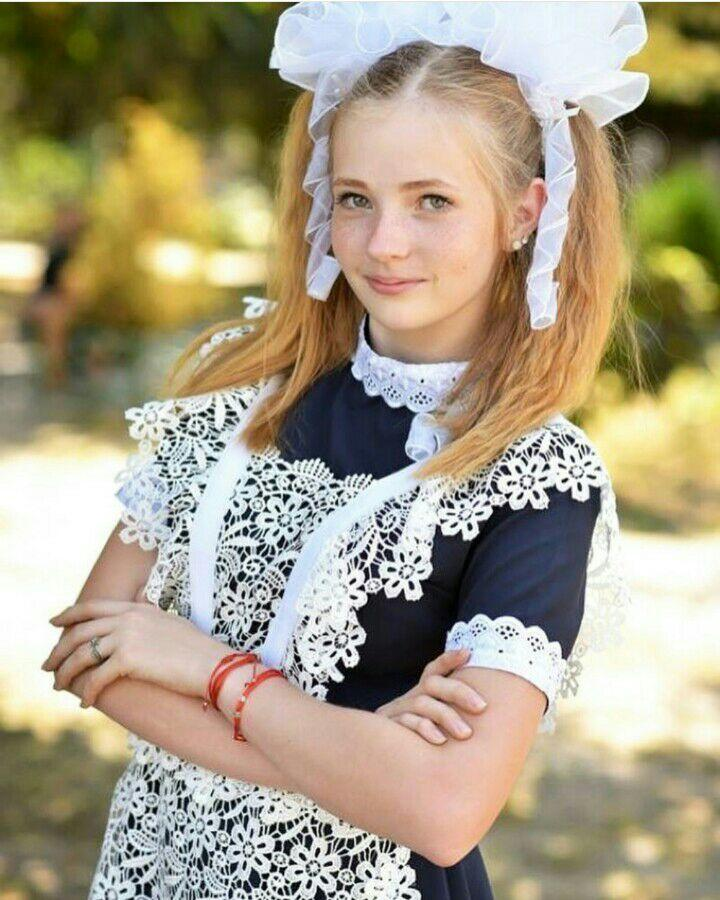

|  | Шевченко Катерина Сергіївна |
||||||
| Народилася 30.10.2001 року | |||||||
| м.Звенигородка, Черкаська область | |||||||
| Студентка Національного Авіаційного Університету. | |||||||
| Другий курс, факультету кібербезпеки, комп'ютерної та програмної інженерії | |||||||
| Cпеціальності ІНЖЕНЕРІЯ ПРОГРАМНОГО ЗАБЕЗПЕЧЕННЯ | |||||||
Улюблений мультфільм "Том і Джеррі"
Улюблений кінофільм "Меліфісента"Улюблена книга "Гаррі Поттер"